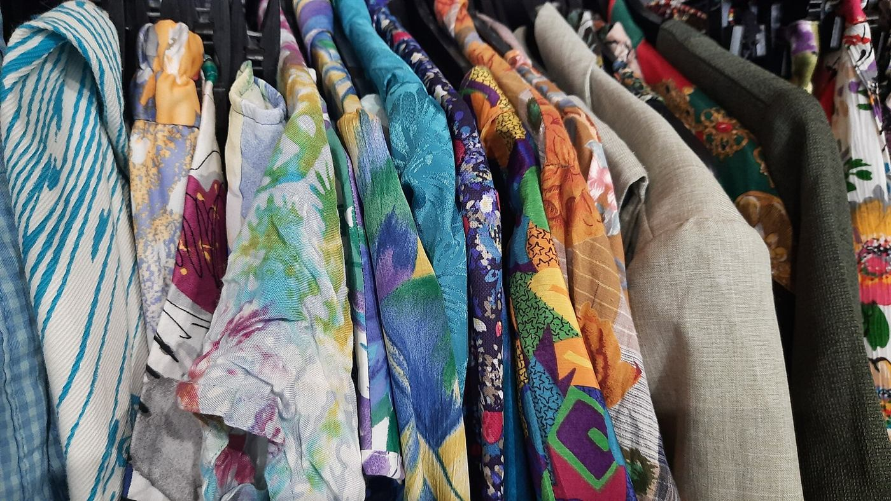
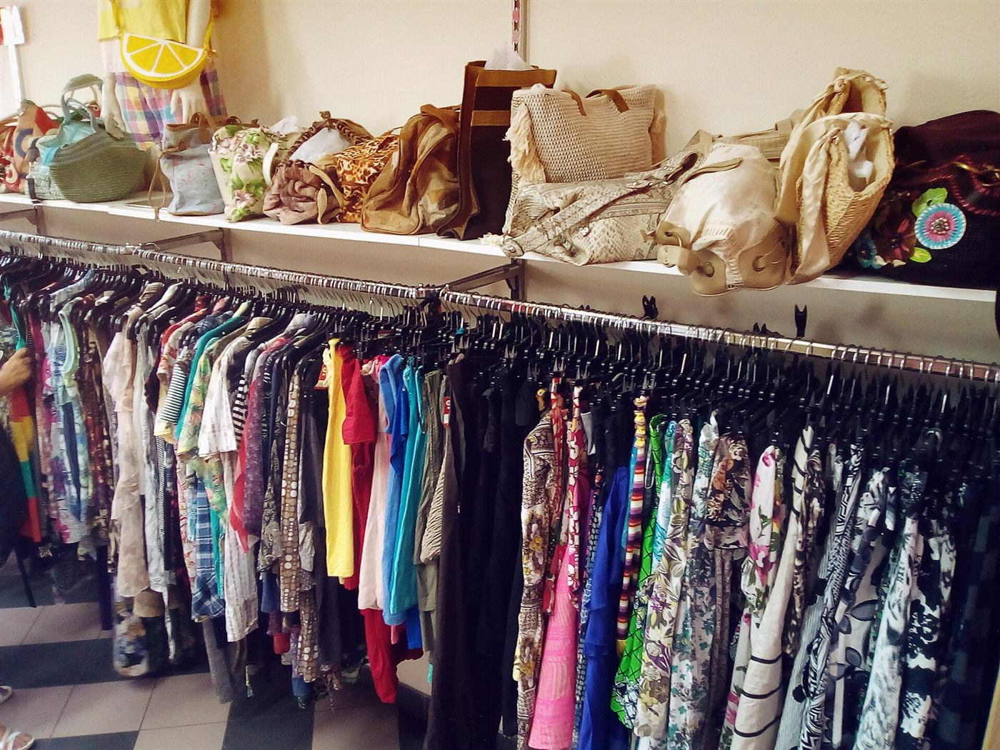

SecondLife.
Second-hand shoppers are a rapidly growing segment within the resource-conscious consumers, who are actively prioritizing and seeking more sustainable purchasing options.
Thrifting & the resource-conscious consumer

Photo: MAKY.OREL, CC0, Wikimedia CommonsA market on its second life
To kick things off, second-hand shoppers are a rapidly growing segment within the resource-conscious consumers, these are basically consumers who are actively prioritizing and also seeking for more sustainable purchasing options.
Growing environmental awareness and the popularity of resale platforms has encouraged for more and more consumers to go ahead and purchase already pre-owned products (ThredUp, 2025). Second-hand shopping helps to extend the product lifecycles, reduce waste, and finally also decrease the overall demand for brand new production, which helps support sustainable consumption practices (Ellen MacArthur Foundation, 2017).
This trend is particularly and specifically more popular among younger consumers who strongly value both affordability as well as sustainability (Ferraro et al., 2016). Furthermore, second-hand shopping helps with supporting the circular economy by promoting the reuse of pre-owned products and reducing the landfill waste (Guiot & Roux, 2010).

Photo: MAKY.OREL, CC BY-SA 4.0, Wikimedia CommonsResale goes mainstream
Environmental awareness and resale platforms push more consumers to buy pre-owned (ThredUp, 2025).
Young & value-minded
Most popular among younger consumers who value affordability and sustainability (Ferraro et al., 2016).
Circular by design
Reuse extends product life and cuts landfill waste (Guiot & Roux, 2010).
SDG 12 · Responsible Consumption and Production
As a result of this, this consumer segment contributes to SDG 12, Responsible Consumption and Production, and this is done by encouraging more efficient resource use and reducing the overall environmental impacts in the world (United Nations, 2015).
Icon: United Nations, public domain, via Wikimedia Commons.